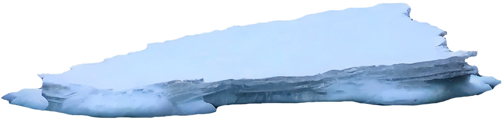
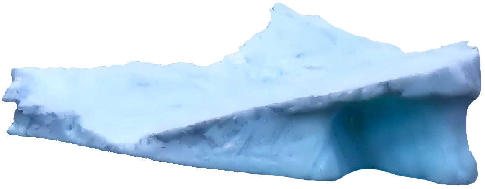
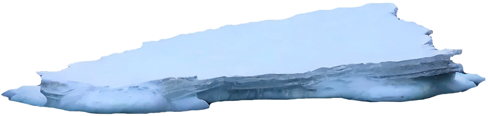
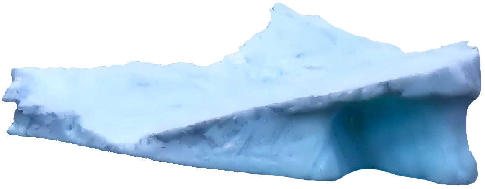
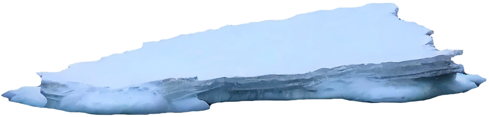
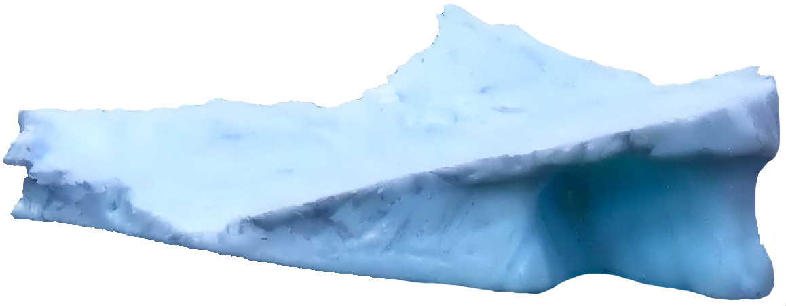
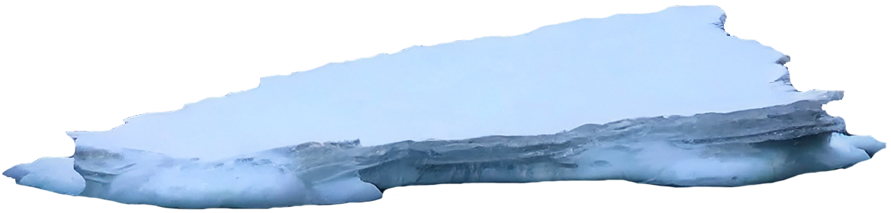
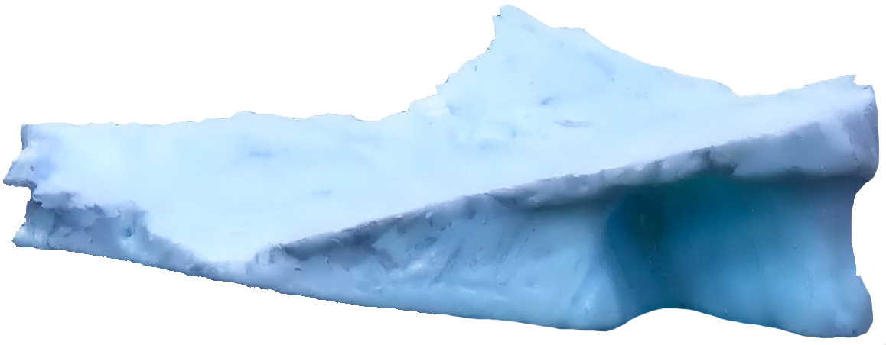
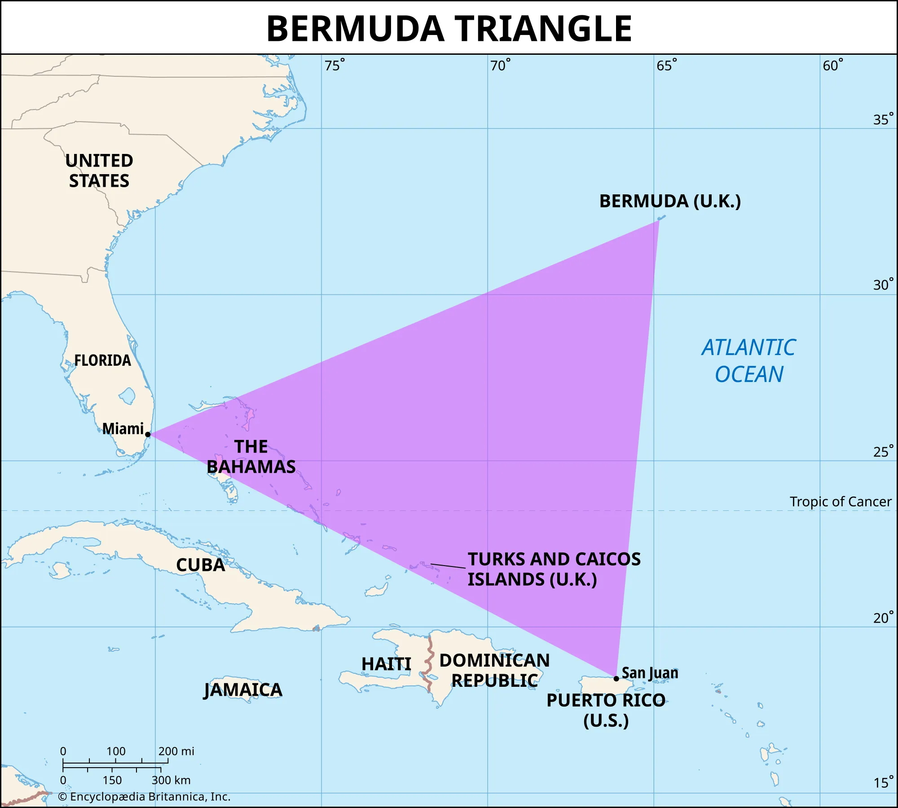
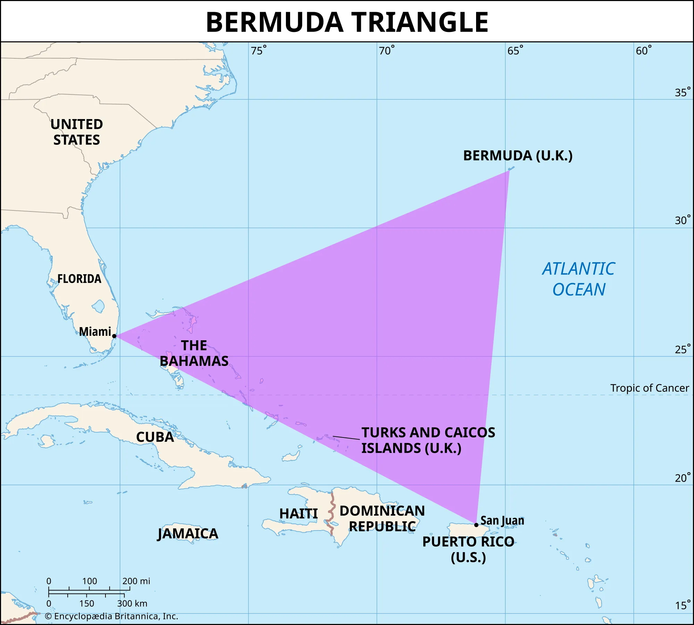

DIVE DEEP INTO THE OCEAN...
 



Now what exactly is a conspiracy theory?
A conspiracy theory is the suggestion of a conspiracy (a secret plan or an agreement between people) as an explanation for something that has happened, even though other explanations are much more believable. Some conspiracy theories are based on facts and are partly true, but others are based on nothing but speculations. They can range from believeable to absurd (think about the flat earth theory). Someone who believes in these conspiracies, is called a conspiracy theorist.
Today you have a chance to look at a few conspiracy theories, they've been split up in the following categories:
To keep track of the absurdity of some of these theories, there's an absurdity meter that's been added. You'll find it once you choose what you want to read about.
And when you're done, scroll down...


 
